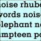

creative stuff
Herein dwells examples of the works of you talented
noise
and THE
PROGRAM
bods, with links to artist profiles and more info about the artists themselves. Onya punters.
Displaying page 1 of 4, containing 1-15 of 57 found items.
Pic //
Name //
In Brief //
Consumer God
OIL PASTELS, PENCIL ON PAPER DIGITALLY MANIPULATED 11 cm x 13.42 cm (print)
lion dance
the dance of movement and noise,
SUNGLASS POSER
This is the first of three experimental rubbish illustrations
Magic Dirt
Magic Dirt being interviewed at the Channel V Studios
If Samuel Pepys Had A Rider: Bands and their Tour Diaries
A 1500-word article on the strange food, strange places,
The Other Woman
No matter how fabulous you are...
Underneath the Clothesline: Underneath The Spotlight
A 600-word article profiling a series of backyard gigs that have been taking place in Sydney called 'Underneath The Clothesline'.
The evolution of the (great) music video
An essay celebrating the role of the innovative and experimental music video
Adalita
Adalita from Magic Dirt, 2001.
Rocket Science
Rocket Science, playing live with a theremin.
Avenging Underwear (and other burning issues)
It occurred to me the other day...

beecroft 2119
a poem about the suburb i grew up in
FLASH FOLIO/CV
This is a cv, or a mini folio of my stuff.
The Dandys rule, ok?
Courtney Taylor at the Enmore Theatre show, May 2001.
Australian Landscape Series #3
Portrait of my landscape
1
2
3
4
Next
status //
Guest. You may
Register
or
Log In
.
Australian Central Standard Time (GMT +09:30) //
10:58 PM, Sat, 5 Mar, 2005.